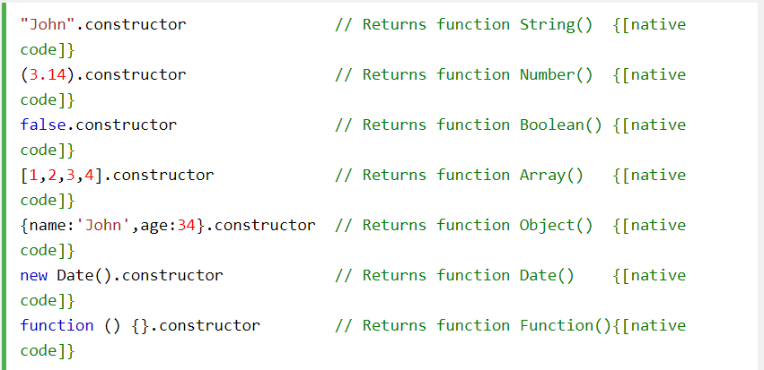

Number () bir Number'a, String () bir String'e, Boolean () bir Boolean'a dönüştürür.
JavaScript'te değer içerebilen 5 farklı veri türü vardır:
6 tür nesne vardır:
Ve değerler içeremeyen 2 veri türü:
typeofOperatör bir değişken değildir. Bir operatör. Operatörlerin (+ - * /) herhangi bir veri türü yoktur.
Ancak, typeofişleç her zaman bir dize döndürür (işlenen türünü içerir).
constructorMülkiyet tüm JavaScript değişkenleri için yapıcı işlevini döndürür.
